(日記とか言うモノ)
なんかアップ用のサーバが不調で、アップするまでにけっこう時間かかってしまった。ときおりレスポンスが異様に悪くなるのはなんでじゃろうな。
なんだかインフルエンザだけじゃなくて、ものすごい勢いで流行ってるコンピュータウイルスがあるらしいですな。知り合いもそれに感染したとかなんだとか。基本的にメインネット環境はMacなので、ほとんど対岸の火事。ちょっとさみしい。
別の知り合いが「ウイルスに感染した！どーしよどーしよ！」とか大騒ぎして、しかも「アンチウイルスソフトも効かないんだよ！たすけてー」とか言い出したのでなにごとかと思えば、
「ウインドウの閉じるボタンとかが、ヘンな文字に変わってるんだよ！やべーよ！」
とか言うことでした。
さっくりとttfCacheを削除して終了。
こっちはMacな人なんだから、winのこといろいろ相談されても困るんだが・・・でもこの程度の対処方はwin使いにとっては基礎的なことかと思ってたけど、そうでもないんですね。ていうか、自分がMacメインでも雑誌とかではwinメインなので、読んでるうちに知らず知らずのうちに自分にWindowsの知識が蓄積されていた、ということにもちょっと驚いたが。
さすがのキムポもリピート入ったのかな？まあ、あのペースでゆくと、つい先日やったエピソードまでいっちゃうので無理もないこと。うーん、てことは去年の分はすべて収録してたってことか。逆に言えば、キムポの新エピがくるのは当分先になるので「おあずけ」ってこと。ああ、洋アニメはおあずけが多いのが難点・・・
にしても、エンディングのキャストリストが毎回同じってのはちょっといただけない。CNのようにその回に出た声優さんの名前くらい出して欲しいよ。まあ、ニックではそれすら出ないからまだマシなんだろうけど。
オリジナルあっての吹き替え編集だけども、吹き替えだって大変なんだ。吹き替えの演出だって立派なクリエイティブ作業なんだよ。だから、そのへん評価して吹き替え版のキャストやスタッフのリストはちゃんと出してほしいと思う今日この頃。
エンディングにスタッフロール出す時間がないなら、webで補完するとかして欲しいんだけどなあ。
好き勝手にやってたら、最近扱うカートゥーンがパワパフ以外のものが増えすぎて、このままでいいのか悩み中。別館でも作ったほうがいいのかなあ？
TEEN
TITANS GO! #3 を買ってきました。
かなりぶっとんだ表紙だったので、ちょっと心配だったんですが・・・
心配的中。
NINJA HIGH SCHOOL かと思った。マンガスタイルとはいえ、ちょっとコレはないだろ。
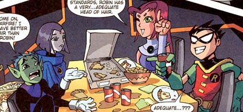
さらにコレだ。
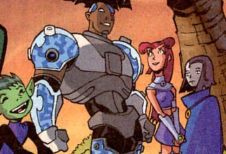
ビミョー・・・どころじゃなくて、ちょっとダメかも。もしこれが今後も続くようなら、買うのやめそうです。
例えていうなら、ガッシュを読もうとしてページをめくってみたら十五郎だった、そんな感じ。
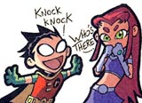
救いはまいどのページ下のミニマンガか・・・
むしろ、今月のCARTOON CARTOONS #26のほうがよかった。KNDが表紙だし。
今回はNo.5のお話。
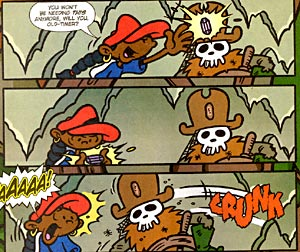
いつもはクールに帽子で目が隠れてるNo.5ですが、いろんな表情が見れてなかなか楽しめます。
KNDもカートゥーンのほうは、けっこうテンポよくコミカルなので、早く見てみたい作品ですね。これ読んで、No.5もけっこう好きになりました。
危険がせまるその時、あたしを呼んで〜キム・ポッシブル♪
最近実はキム・ポッシブルにハマリぎみ。
最初はデキはいいけど、ちょっとギャグがゆくるてどうかな〜、ってとこもあったんですが、なんか回をおうごとにぐんぐん面白くなっていってる気がします。特に最近やってる第二シーズン分はなかなかイケてます。
ギャグがゆるいのは、あいかわらずだけど、人気が出てスタッフもノってきたのか、けっこう好き勝手にやってる感じですごくいい。キツイ規制の中で作ってるせいか、毒のあるギャグなんかはないんだけど、（胸の谷間とかも御法度だったりね）その分、ほかのとこに力をそそいでるのがよくわかる。
この作品の素晴らしいところは、流れるようなテンポのよさなんだよね。あとシーゴー姉さんのアクションと・・（笑） 最近はヘンな顔とかも多くて、なかなか楽しめます。
そんな中、最近ではこんな話が・・・
町はずれに住む孤独な渋い老人。そこにロンがボランティアにいくが、たまたま不思議な家の地下への道を発見。そこは洞穴を利用した謎の司令室だった！！ その部屋にあるガラスケースの中には・・・
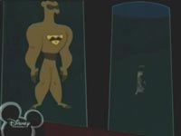
（゜д゜;≡;゜д゜）こっ、これは！！！！まさか！！
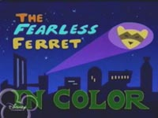
（´Д｀）ズガーン！
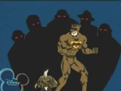
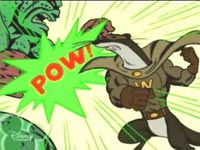
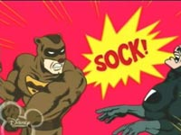
∩( ・ω・)∩天下のディズニー様がバットマンネタ！
これは街を守る伝説の夜の騎士フィアレスフェレット。でもって、それを発見したロンが現代のフィアレスフェレットとして活躍するお話。老人となったかつてのヒーローは司令室で指示をだす・・・ビヨンドかよっ！
ディズニーは営業とか経営とかの上層部がクソなだけで、やっぱ作品やクリエイターには罪はないんだよ。ていうか、いつまでも某ネズミ様にばかり固執してるから、おかしくなっちゃうんだよ。もうそんなものは破棄して、こういう新しい作品をどんどんプッシュしてだなあ。
最近ディズニーは3Dのほうがヒットしてるから2Dのアニメスタジオを閉鎖しちゃったとか、スゲエバカなことしてるけど、わかってないよお偉いさんは。ピクサーとかの作品がウケたのは3Dだからじゃなくて、作品がよかったからだとなぜ考えられない。もうバカバカバカバカ。だから視聴者もディズニーといったらおネズミ様ばっかりちやほやしないで、こーいう作品をもっとどんどん評価すべきなんですよ！もっと、もっと、シーゴー姉さんを！（あれ？）
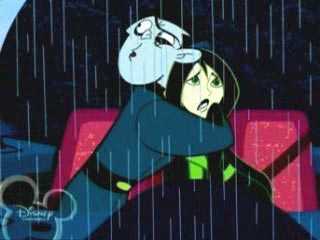
別にロマンチックなシーンではない。ドラッケン、どさくさにまぎれてセクハラ中。
シーゴー姉さんステキすぎです。
今日はユーロスペースにカチャーノフのミトンを見にゆく予定でした。
ていうか、行きました。
開始時間ちょっと前に着いたんですが、なぜか入口前でUターンする客が多い。 ？
よくわからんかったけど、とにかく入場口までゆくと・・
「本日はおすぎのトークショウのためミトンの上映はありません」
バカ〜〜〜〜〜〜。
おすぎなんてきらいだ。
映画館でトークショウなんかすんなよ、ぼけ。ちきしょう。
あ、映画の話とかすんのかな。だから映画館なのかな。だたね、どうも私とおすぎの映画観ってまるで違うのよね。完全に逆といってもいい。おすぎが誉めた映画でおもしろかったためしがないし、反対にけなした映画ほど私にはおもしらかったりすることが多い。だから反対の理由でおすぎの映画評ってのは参考にしてたりします。
「おすぎが誉めたか・・・こりゃあ、オレとは相わないな。」とかいう判断材料に。
そんなんで、ちょっぴりしょんぼりしてたとこで友人からメールが。
六本木ヒルズに遊びにいったんだそうーだ。へーそりゃよかったね、ちくしょう。で、今テレビ朝日って六本木ヒルズにあるらしく、そこのおみやげ売り場でおもいろいものを見つけたとか言いやがる。なにかと思ったら・・・
『どんと来い、超常現象』上田次郎著
（ ・◇・）∩どんとこ〜い！ って、本当に売ってんのかよ！！売ってました。
うーん、全然知らなかったよ。
／::::::::::::::::::＼
/::::::::/ 丶::::::＼
/:::::ノ ＼:::::ヽ
|::::::: ＼ ／ :::::| ／￣￣￣￣￣￣￣￣￣￣￣￣￣
|::::| ● ● |::::| |
|::::| .. .. |::: | ＜ まるっとおみとおしだーー！！
|::::＼ ［__￣］ /::::::::| |
|::::::::::＼＿__／:::::::::::::| .＼＿＿＿＿＿＿＿＿＿＿＿＿＿
|_:::::::::｜ |::::::::(⌒)::|
|::::::::::|-､ ,-/......ﾉ~ ﾚ-r┐
/....|::::丿|,,,,,,/.....ノ__ | .| ﾄ ､
/.........レ.....| 〈￣ ｀-Lλ_ﾚ′
ﾚ...................|/....￣｀ー‐---‐′
やっぱMacだとちとズレますな。しかもちょっと太め。
web上にはいろんなものがあるもんで・・・・。
やってみました。「ス カ ポ ン 太」っと。
恋愛運：A 健康運：A 成功運：A 金運：A の最上級の「大吉」！！！！！
かつては、こんなハンドルにするんじゃなかったと嘆いたこともあったが、自分にとって、こんなに極上のハンドルだったとは・・・・・（ちょっぴり複雑な気持ちになったのは内緒だ）
ちなみにこれやると、改名案てのが提示されるんだけど、
「スカポン太(;´ロ`)」だと凶でした・・・
生年月日も絡んでくるので、他人のハンドルは占えないのがミソです。
しかし、ネット上でしか使えないハンドルで、恋愛運とか金運とか関係ないんじゃ・・・むしろパワパフにハマりだしてからお金無くなりまくりなんですが・・・・
お金といえば・・・ しょっちゅうスパムメールとか受け取るんですが、たいがいはほとんど読まずにポイです。だいたい、ほとんどがウチのサイトなんか見てないだろコラ。なんていういいかげんなモノばかりなんで「アホが、バカがこのこの」といった感じに無視しまくり。ただ、この間ちょっと面白いやつが来ました。
件名が「http://ppgcom.gooside.com」だったんだよね。でもって、中みると、
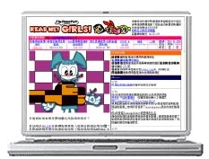
こんな画像が。 ちょとビックリした。
ちゃんとウチのサイトを見たうえで、こんな加工までしてするとは、なかなかやるじゃないですか。どれどれ、文章も読んであげよう。
「あなたのサイトを調べたところ、主要な検索エンジンに登録されてないことが分かりました。」
ふむふむ。
「だから、代わりにあちこちに登録してやるから金払え」
( -Д-) 一気に萎えました・・・やっぱスパムかよ・・・・
この画像もキチンと合成したのかと思ったら、PowerBookG4のガワの部分はテーブルで固めておいて、中のwebキャプだけ差し変わるような作りに・・・適当に機械的にキャプしただけなんだろうなあ、きっと。
だいたい今時検索エンジンに登録なんてナンセンスですよ。アクセス解析みても、ほとんどの人がカテゴリー検索なんて使ってないで、googleとかyahooのワード検索でたどり着いてるんですよ。ワシだってそういう使い方だし。
（なんか知らんが「スカポン太」で検索かけてくる人多いのね）
で、久々にアクセス解析見てみたら、ここ数日ドイツからのアクセスが急増中。韓国を抜きました。なぜ？
お絵かき掲示板、いきなりいろんな方々が描いてくれたのが、ビックリと同時に感動。まあ今は、設置したばかりのご祝儀カキコでしょうけど、それはそれで。嬉しいことにはかわりないです。ジェニーが描きたくなったどうぞどうぞ！（エゴまるだし）
今日はパワパフの新刊を買ってきました。お、今回はちょっとおもしろいかも。やっぱフィル・モイいいな。
なんとナレーターさん登場です。
ついでにヴァスケスのSQUEEも買っちゃいました。あいかわらすスクリプトが読みにくいので、難航してますが、この巻はZIMやDIBの原型みたいのが出てくるので、ちょっと興味深いですね。ジョニーも特別出演してるし。
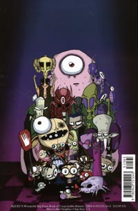
豪華な裏表紙。よく見ると〜
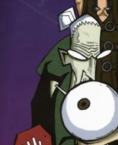
すでにこのお方が登場してます。やっぱり教師役。
なにげにアマゾンみてたらフー・スィーチン（FSc）の Nightmares and Fairy TalesがいよいよTPB化で3月発売ですか！これは絶対TPB化すると思ってじっと我慢してたかいがありました。さっそく予約にポチットな。
お絵かき掲示板を設置してみました。
ずっと前に「絵板は設置しねえ！」なんてほざいていた私ですが、最近海外のMLaaTRとかTeenTitansとかのファンサイトを覗いているうちに、もっと見てみたいよ〜！といった欲望がムクムクとせり上がってきてたんですよ。
かといっても、これらは日本未公開作品。いくらうちのサイトで盛り上がろうと、ごく一部での知名度でしかないんですわ。そうでなくてもカートゥーン絵なんて描けるとこは限られてるし。まあ、描きにゆける場所はないこともないんですよ。でもね、「私が描きたい」ってのもあるけど、「他の人も見てみたい」ってのもあるんですよ。もっと！もっと！オリにジェニーをみせてくんろ〜〜！望むものがなければ自分で創る。これwebの鉄則。
ぶっちゃけ、パワパフだけならいっぱいあって、よりどりみどり。だから、自分が設置する必要性はあまり感じなかったのね。でもね、ジェニーやジンクス絵もみたいのよ。もっと！もっと！もっと〜〜〜！（ああ、同じこと繰り返してら）
掲示板は自分でコントロールすることは出来ないので、どーなるかは分かりませんが。
ジェニーとかジンクスとかスターファイヤーとか、シーゴー姉さんとかキムとか、ZIMとかGAZとか、レオナルドとかシュレッダーとか、スーパーガールとか鳥女とか、ハーレィクインとかアイビーとか、レンとかスティンピーとか、ヘンリーとジューンとか、マードックとかヌードルとか、レノーアとかミスマリーとか、サンバンちゃんとか、ヘルガとか、マンディとかガストリーとか、ポーラとかメリッサとか、アレックスとかクローバーとか、ゾラックとかブラックとか、描いていただけると大変嬉しいです。あ、もちろんパワパフもOKですわん。
ま、自分で描きますけど。
(；´д｀)これが人様のだと、「知ってるかな〜、マイナーかな〜」とか若干の心配があるんですが、「オレ様の場所」なんで、オレ様が描く分には心配ナッシング。反応なくても寂しくないし。
でもな〜外人とか来たらどーしよ、怖いよ〜。英語できませんから。読めても書けませんから。きっとズガーんと日本語でレスしちゃいますよ。「ここは日本のwebサイトである！だから貴様も日本語で書け！」とか言い出しそうですよ！
捕らぬ狸の皮なんとかでしたな・・・・
あと、こんだけポピュラーなお絵かき板というサービスを、一度体験してみたかった、というのもありますな。webサイトにしても、自分が管理してみないと「見えてこない」ものってのがあるように、こーいうのも一回やっとくと、なんか見えてくんじゃないかと。ね、ね。なんか言い訳がましいですな。
いいじゃないか！ジエニーがもっと見たいからっつうエゴで設置した絵板で、いーじゃないか。
・・・とか言いながら自分はスペースゴーストとか描いたりするんだよな、きっと。
・・・とか言いながら、急に忙しくなったりして描くヒマなくなったりすんだよな。人生ってきっとそんなものだ。
あんまり話題にならないトータリースパイズ。面白いか、好きか、って問いつめられると、非常に返答に困る作品ですが、なにげに見てたりします。アレックスは好き。（こればっか）
そんなトータリースパイズも4月にDVDがリリースされるようです。
トータリースパイズまでDVD化するというのに、なぜにCNの作品はパッケージ化されんのでしょうかね？（adultswim系はなぜか微妙にされてるみたいですが。SGC2CとかAqua
Teen Hunger Forceとか）
「その理由なら少なくとも6通りはあるんだ」（スーパーマン風に）
それはともかく、ビリマン＃26を見てなんとなく描いてしまったマンガ＞■
MLaaTRが4月からというのはホントだろうか？元ソースがわからないので、なんとも言えないんですが、4月からアメリカで第二シーズンが始まるってことじゃないんだろうか。なんて考えたり。
MLaaTRといえば、jennysworldで面白いモノがアップされてました。
ジェニーの顔のバランスシート？
よくやります。日本のファンアートだと自分絵にしちゃう人が多いので、なんなんですが、それなりに参考にはなるかも。
あっ！そういえば、MLaaTRの新作の「Saved by the Shell / Tradeshow Showdown」も、もう放映してたはず。Dr.Wakemanのファーストネームが判明するようです。
金曜のビリマンはハロウィンスペシャルでしたか・・・意外だったな。
って、ちょっと遅いですか。金曜の夜はビリマン見たのに安心して飲み会にいってきました。
久々だったので、へべれけに。うーん、やっぱりCSに加入してる人って少ないのな。
オフラインの友人ではCSはおろかケーブルにすら入ってない人ばかりです。そんなものなのかなあ。
それはさておき、ビリマンですが、さすがビリマンのハロウィンネタだけあってダークでいいかんじ。グリムが死神さんらしくていいですなあ。ジャックもカッコイイし。しかし、そんなに強力なアイテムだったのね、あのカマは。カマなしグリムのなんと無力なことか。まるでステッキのない閻魔くんのようだ。
ビリマンのあのゲームでマンディがなんであんなかっこうをしているかが、やっとわかったよ。この話が下敷きになっていたんだなあ。ゲームだけじゃなく、マンディがカマをふるう姿がアニメでも見れたので興奮しました。似合いすぎです。
アーウィンがマンディのことを好きだなんて初めて気が付きました。そーいえば、「マンディの恋」の話でもダンスに誘ってたっけ。てっきり他に女の子の知り合いがいないから、という理由だと思ってましたが、違ったようで。初めからマンディ狙いですか。やるなアーウィン。アーウィンの部屋のマンディ写真もすんばらしいカットばかり。放置プレイもくらってさぞや満足なことでしょう。
やっぱアレかね。ビリーがマンディの身体に入って、アーウィンを誘った時のエピソードがきっかけだったのかしらん。ビリマンは見返すとまた新しい発見があるかも。
最後までマンディにキスを迫るアーウィンの執念はたまらんですな。一応のお礼に、まさかのキスがあるかも！なんてちょっと思いましたが、そうならないのはやはりビリマンです。
「ロマンスは弱虫のやることよ」
あー、そういえば、グリムの思い出話。エンドズヴィルに女王が？ってマンディがつっこんでましたけど、それ以前にあんな中世はアメリカには無いと思うんですが。それとも実はあそこはアメリカではないのかも。
2月の編成はそれとして、とりあえず明日のビリマンが気になります。
そーいえば、こんなニュースが。
ＮＴＴ、スカパー：ブロードバンド放送参入、今夏にも月2000円
ほとんど知られてないYahooBBのブロバン放送と同じものでしょうか。まあ、しかし、このニュースの直後にこんなコメントだしたみたいだけど。
キッパリと否定してます（笑）
記者の勇み足？それともスカパーの駆け引きでしょうか。まあ正直ブロバン放送ってイマイチ採算とれるかどうかわからんとこだから、慎重になってるってとこもあるんだろうけどね。そもそもブロバン放送はsonyがやりたかったことなんだろうから、sonyからちゃちゃがはいったか？
今日のキムポは珍しく2本だて。特に2本目のやつはキビキビしててよかった。やっぱカートゥーンは短い方が締まっていいね。しかし・・・シーゴー姉さんはあの服のままで買い物するのか・・・普段着姿のシーゴー姉さんも見たいなあ。
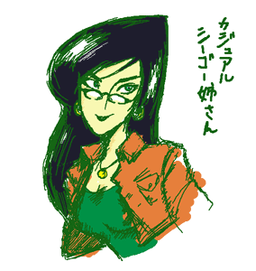
あーなんか2月のCNのスケジュールがトンでもないことになってる、らしいので確認しに行ってみた。
うむむむむ、確かに・・・・
なんだか視聴者の意見を反映してんだかなんだかよくわからん構成だ。
気が付けばninjaは無くなり、他の日本アニメもわずかに2つのみ。
映画化の影響かガーフィールドが復活。しかもビリマンが平日連日放送に。
それはいいんですが、「おくびょうなカーレッジくん」「エドエッドエディ」「カウ＆チキン」「X-MENエボリューション」「バットマン・ザ・フューチャー」「ジャスティスリーグ」が・・・消えた・・・
CatoonCatoonsおよびToonami壊滅状態！
ジョニー残してカーレッジくん消滅ですか！
スーパーマンのみ残してアメコミ系全滅ですか！
他にもつっこみどころは満載なんですが、妙に気になるのはパワパフ。毎日！しかも平日にいたっては一日四回！なおかつ深夜3時半に放送枠あり！小さなお友達も大きなお友達もパワパフ見ろ！と、そういうことですか！
これは、もうじき新作やるから復習してなさいって意味ですね！！！
だいたい、深夜3時半にパワパフなんてオレに見ろと言ってるようなことだし。
あ、ちょっと妄想入った。
にしてもなんだか不思議な構成です。CN恐るべし。番組表から「ゴゴゴゴゴ」と擬音が聞こえてきます。これはなにかおこる前触れなんでしょうか。うむむむむむ。
それにね〜、なぜか午前9時のとこが空欄のままなのよ。怖いよ〜。ここナニがはまるの〜。
あと、今週金曜のビリマン・・・タイトルがなくて＃26ってなんですか〜〜！ビリマンは今まで＃25までしかなかったはずですよ〜。怖いよ〜。こっそり未放映分流すつもりなんでしょうか。だったら嬉しいけど、CNってば油断できなさすぎだーーーー。
今日のキムポではシーゴー姉さんが家庭教師でつきっきりの個人授業・・・うらやましい。ジュニアめ〜、なれなれしくさわるんじゃない。
かわいい娘は料理がヘタという法則はあちらでも機能しているようで、ポッシブルもかなりのヘタ。マズイ以前に完成にまでいたらない。一方のロンは家庭的というか、達人レベルというか、もしかしたら実社会ではロンのほうが優れているのかも。別のエピソードでもバツグンの経営センスを発揮してたし。そーいえば、ロンはアチラのアニメでは数少ないトランクス愛用者だっけ。だからどうというわけでもないけど。もしかしたら日本と米国ではブリーフとトランクスのイメージってけっこう違うのかもしれない。
gorillazのファンサイトとかも回ってみた。
ヌードルってサムライジャックとお友達なんですか？ラッセルのスタンドってラッパーの幽霊だったのね。そのおかげで達人レベルの技量を得たとか。まるでヒカルの碁ですな。
そーいや、最近リンクしたビリマンサイトのSinister Creature。日記見たらgorillazネタが！さらによーく見たらマンディのヌードルコス絵とか、マードックとグリムのセッションとかあって、ありゃ？と思ったら、本サイトはgorillazサイト様でした。今頃気が付くなよオレ。うああ、いかに人様のサイトをちゃんと見てないかがまるわかり。いや、gorillazを知る前だったら「どっかのキャラ？」程度でそのままスルーしてたと思うので、これはこれでタイミングいいのかも。まあ、管理人のzelさんはきっとうちのサイトは見てないと思うので、大丈夫だよ・・・な。
旅疲れといのは仕事疲れとは別種の疲れのようで・・・
去年発売のものを今年発売と勘違いしていたgorillaz。さっそくHMVへいって購入。
「gorillazありますか〜」と店のねーちゃんに聞いたけど、全然知らないようす。あれ？少しは話題になったバンドじゃなかったんですか？うーむ、カートゥーンにしても最近一般レベルとの常識のズレに少しとまどうこと多いなあ。まあ、自力で探したけどね。
とりあえず、現物見て想像とのズレを修正。マードックってばあんなに脱ぎたがるキャラだったとは。けっこうおっさんだし。意外にカッコよかった2D。
他のキャラが濃い目だったので、やや地味かと思ってたラッセルが、実はスタンド持ちだとは驚きましたわん。油断できません。
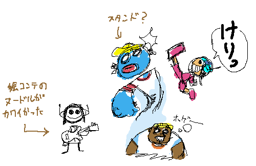
寝てるときしか発動しないみたいだけど。
トゥーンな感じのデフォルメ加減が素晴らしく、もっと見てみたいんだけど、今は活動停止してるのかしらん？
gorillaz買った勢いでJhonan Vasquezの「I FEEL SICK」も購入。やっぱいいねえ。病みまくってるけど。それにしてもこの人のコミックのセリフは、私にはやっぱり読みづらいでし。字も読みづらいけど、文章自体なに書いてるのかよくわからないことが多くて・・・脳内補完しまくり。
帰ってきました。
ものすごく普通の結婚式でした。式場が用意したコースそのまんまといった感じで、正直ちょっとツラかった・・・・（新郎新婦とほとんど話す時間がない、祝辞が多い長い、途中で参列者のカラオケ、クサい司会のセリフ、食べられないケーキに入刀・・・）
まあ、ここまでド・スタンダードなものもよく考えたら初めてだったので、まあそれはそれでよしとするか。
それはともかく・・・
コレみてくださいよ！
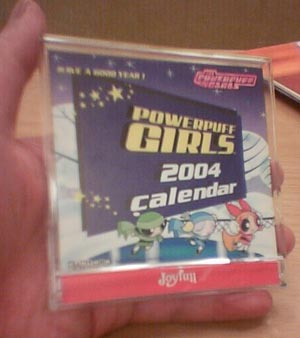
ドギャーーーーン！！
ジョイフルに行って参りましたっ！
いやね、福岡発の帰りの便がものすごい遅いやつしかとれなかったもので、（おかげで関東に着いたときは終電ギリギリ）空港でめっちゃ時間をもてあましてたわけですよ。で、せっかく九州に来たのにジョイフルによれなかったのは残念だなあ、でもさすがにどこにあるかもわからないジョイフルを探す余裕なんかはないし・・・
「あきらめるな・・・あきらめないものだけが最後に勝つのじゃ・・・」
とまあ、スプリンター先生の脳内啓示をうけて、ちょっと探してみました。
（福岡空港には10分100円のネット端末がある）
ファミレスは郊外店が多いけど、博多ならもしかしたら近場にあるんじゃないかと・・・ジョイフルのサイトの店舗情報を見るとやっぱり博多近辺は多いです。でも住所だけで場所はよくわかりません。しかし、そこはそれ、地図検索サイトと併用して（こんときはちず丸の電話番号検索が便利でした）探すことに。
最初は「空港店」てのがあるから「おお！空港内にあるのか！」とか思ったんだけど、全然はずれのほうでした。地名と位置関係がまったくピンとこなかったので苦労はしましたが、ようやく発見。「福岡東比恵店」。
博多と空港を結ぶ地下鉄のちょうど中間の駅「東比恵駅」。そのすぐ近くにあるではないですか！！！（駅から歩いて3分くらい）これなら10分くらいでいける！
で、行きました。ありました。
ドリンクバーにはパワパフのイラストが！！
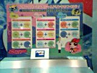
メニューにも！
しかもカレンダーキャンペーンはまだやっていて、セットじゃなく単品でも購入可能に。（100円）でも、これ店舗ごとに先着200名限定なんだよなあ、まだ残ってるかなあ、去年のキャンペーンだからもう残ってるわけないよなあ、「あの〜」残ってました！！
こんな感じでした。＞ジョイフルご注文マンガ
うううう、ついに念願のジョイフルパワパフカレンダーが！
たった百円のカレンダーにどれだけ余計に金がかかったかとか、そこまでして入手するほどのものか、とかいうツッコミはなしだ！そーいうことじゃないんだ！そーいう・・・（がんばって冷静に分析しないように努力中）
ちなみに、今のドリンクサービス割引券はこれでした。
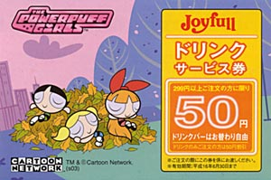
（ナンバーは7）
レジで「その割引券もくだちゃい！！」と言ったらあんちゃんが4〜5枚ごそっとまとめてくれた。いい人や〜。
いい結婚式でした。（あれ？）
下であんなこと書いてるけど、テクリさんに教えてもらったgorillazに興味津々で、仕事遅れ気味。このままでは結婚式中に寝てしまうかも。
イギリスの覆面バンドgorillaz。コミックキャラがバンドやってることになっとるんです。で、このキャラデザがタンクガールのジェイミー・ヒューレット! マジですかー！って感じ。
タンクガールは映画しかみてなくて、映画自体は「ふーむ」といった感じなんですが、そこにちょこっとだけアニメパートが挿入されてるんですよ。これが！これが！ぶっとんでてスッゲー良かった。もう、これは本来アニメでつくるべきだった！間違えちょるよ！今からでも遅くはないからアニメでつくれや！ホンマ！
・・・・・と、 その印象ばかりが強い映画でした。で、興味をもってアメコミ（イギリスコミだけど・・・）も買おうかと、思いつつも、まだ買ってません。
ぱらぱらっと読んだんですが、なんかよくわかんないんだもの。(笑)
さすがイギリス、パンクの本場や。と、一人感心した覚えが。
で、gorillaz。
なんかアニメのPVがスゲエよさげなんですよ。念願かなって、あのタンクガールアニメ版のようなノリを期待しちゃう。CDには特典としてそのPVが付いてくるっていうし、今度出るDVDは映像満載で、思わず買っちゃいそうです。つうか買う気満々。そのまま輸入盤買おうかと思ったけど、どうやら海外からクレームがくるほど日本版のほうがデキがよくて豪華らしいので、日本版を購入してみようかな。
まるでビリマンのビリーのようなくるくるぱーな2Dに、妙に真面目なラッセル（グリーンランタン？）、でもってベーシストはジョニー（※ジョニーブラボーじゃなくて、殺人狂ジョニーのほうね）のようなサイコなサタニストのマードック。
極めつけは10歳の日本人の女の子ヌードル！！！好きなものパワパフ！スギューン！
これでトドメをくらいました。
モジョのT-シャツを着た2Dのカットとかもあったりして、ジェイミー・ヒューレット自体がパワパフ好きなんじゃ・・とか思ったり。
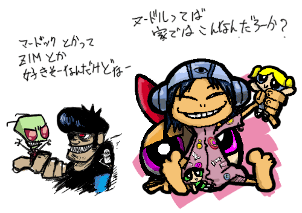
マードックはちょっとゴツくなりすぎたか？
サンバンちゃんといい、今世界は「日本の少女」がトレンドなんでしょーか？(笑)
ってああ、こんなの描いてる場合じゃないのに・・・いいやもう、日曜の夜に徹夜しよう。
週末土日に九州にいくことになりました。親戚の結婚式。
かなり遠い親戚なんで、出席する予定はなかったんですが、いろいろあって急に出席するはめに。仕事の締切が週明けってところにこの話。調整でてんてこまい。ていうか、土日でゆっくり仕上げようと思ってたのにそれが出来そうもないので、今必死。ご祝儀代やら交通費などの出費もイタイなあ。まあめでたい話なんだろうけどさ。
二人だと幸せも二倍です。辛さも二倍・・・げふんげふん。
九州といえばジョイフル！なんですが、一人ファミレス探索なんて無理っぽい。さてはて。
CN公式が2月のスケジュール発表。特にいうことなし。
まーなんだ、去年の夏くらいから毎月毎月異様なノリで新作更新し続けてきたのが、ちょっとおかしかったと思った方がいいんだろうな。おかげで視聴者も来月はなにが待ってるんだドキドキ、と過剰に期待するのが普通になっちゃってたもの。昔は新番組どころかローテーション変えるだけってのが普通だったんだよねえ。まあ、パバールが始まりますけど。2月にパワパフ新作ってのは予想はずれましたな。それにしてもファンというのはどん欲だ。
でもまあ、とりあえずキムポの新作が始まるので、とりあえずは良しとしとくか。録画の準備しとかなきゃな。見るのはちょっと先になりそうだ。
ティーンエイジロボットのグッズ欲しいけど、やっぱフィギュアが出てほしいなあ。
春にニコロデオンのグッズが日本から出るというけど、まぎれてMLaaTRもでてくんないかねえ。やっぱりスポンジボブとかラグラッツになっちゃうんだろか。
どうコメントつけたらよいやら。あちらでは日本人の顔はああ見えてるんだと思うと、これもまた文化差の考察としては楽しめるかと。
よーやっとアマゾンに頼んでいたアメコミが到着。たまっていた分全部。
・・・なんか前にもこんなことがあったような。
TPBなので、読みこなすにはけっこう時間がかかりそうだ。
しかーし、とうとう念願のUSAGI YOJINBOのBook3が手に入った。あーうれしい。この巻には座頭猪とか凶鬼JEIとか出てくるので読み応えばっちり。おお、GENの角がまだ折れてない！
そしてなによりも、この巻には番外編「TURTLE SOUP and RABBIT STEW」が収録されてる。これこれ、これが読みたかったんだよね。これはファンサービスの特別編。
USAGI YOJINBOの世界にニンジャタートルズのレオナルドが迷い込む話！うひょー！
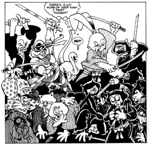
出てます、出てます。ちょうどレオナルドの二刀流と対をなすように、ここでは珍しく宮本兎も二刀流。いいねー。
あー、こんなの読んでたらTMNTが見たくなっちゃったよ。新作のほうはDVD買ったからいいけど、旧作のアニメ、もう一回みたいなあ。CNやってくんないかな〜。いやマジで。見たいよお、見たいよお。
旧作ではエイプリルがけっこう好きだったのに、新作だとあんま出てこないんだよね。設定も変わっちゃってるし。年齢も若くなった？
私は旧作のエイプリルが好きだなあ。年齢も30ちょっと前28くらい（設定年齢は知りません、私の願望のイメージ年齢）の感じの、こう仕事にも油がのりきった感じの頼もしさがあったんだよね。バリバリ働く女性は大好き。気も強くてよかった。まあ、ロイスほどキツくはなかったけど。
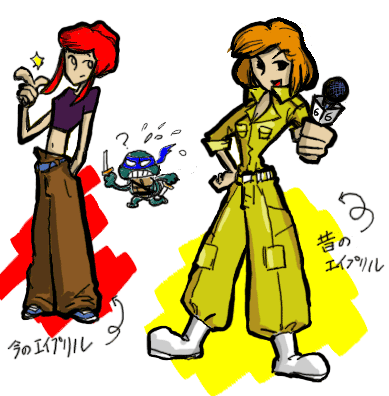
確かこんな感じ〜。この無骨な作業着みたいなつなぎがいいんですよ！
新作のエイプリルはへそだしで、まるでキム。
なんで、ちょっぴりキム・ポッシブル風に描いてみた。
あー、タートルズ見てえよーーーーーーヽ( `Д´)ノ
トップの模様替えとかいっても、レイアウトがかわっただけ。
文字多いなあうちのトップ・・・・
なんちゅうか、すごく凝ったレイアウトとかカッコイイ美麗なデザインのサイトとか見ると、「おお！」とか思ってよーし自分も！なんてよく思うんですが・・・なぜかいつもこういう形になっちゃうのはなぜなんでしょうかね。
webとかってやっぱりその人の個性や好みがモロ反映するもんなんだなあ。
改めて自分分析。
どうもフレームとか嫌いみたいだ。テキストが好きみたいだ。横長よか縦長が好きみたいだ。
テキストを画像化して凝るよりは生テキストのままのほうがコピペできて使いやすい思うし、フレームで情報を分割するよか長くなっても一つのページに情報がまとめて網羅されてるほうが使いやすいと感じる。あらためて自分は「情報系」を重要視しているのがわかった。なるほどね。だからこんな自分メモみたいな感じになっちゃうんだな。
それにしても、早めに表紙替えできてよかった。なにしろ、去年は正月絵が4〜5ヵ月表示したままだったというイヤ〜な思い出があるもので。（ﾟДﾟ）ﾄﾗｳﾏｰ
で、全然関係ないんだけどさ、JLとか見ててなんとなくデジャヴのような感覚があったんだけど、やっとわかったよ。これって、あちらのSF洋ドラを見てるときの感覚に近い。アウターリミッツとかXファイルとかミュータントXとかマックスシンドロームとかアンドロメダとか。
基本キャラクターと舞台を設定して全体として大きな流れはあるものの、基本的に各話各話でテーマや雰囲気が違ってそれぞれの話ごとに非常にに調和のとれたストーリー構成になってる。ってやつ。カートゥーンというよか洋ドラをみているみたい。
ところで、グリーンランタンのあの便利なリング、ビームなのにバリアになったりハンマーになったりとオールマイティーでいいですな。あれって宇宙怪人ゴーストのUバンドと同じモノと見なしていいでしょうか。Uバンドのビームも「ハンマー光線」とかいってハンマーになったりするし。ゴーストは元グリーンランタン隊？(笑)
で、またまた話はかわるが、アクセス解析を見ると昨日から妙に韓国からのアクセスが増えている。なんで？
まあなんだ。日本で作って日本語でしかやってないからこのサイトも日本の上にあるもんだって認識があるけど、よく考えたらわしらだってそれこそしょっちゅう海外サイトを覗いているわけで、いちいち反応することでもないのかも。検索エンジンからたまたま迷い込んだってこともあるし。
ただリファとか見ると、web翻訳経由ってのも多い。読まれてる？ドキドキ。
それでちょっと不安に思ったこと。こんなむちゃくちゃな乱れた日本語を使ってる文章とかちゃんと訳せてるんでしょうか？ためしに、自分のとこのテキストを英語に翻訳＞さらにそれを日本語に翻訳し直してみる。
むちゃくちゃだ！
今日の異議あり。
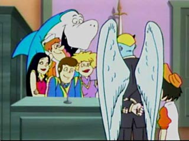
（・_・）＜キミたちもいつまでたっても放送されんなあ・・・
最近自分調子に乗ってるような気がするんですが・・・・どっかで自重しなきゃいかんか
そういえば成人式なんですね。しかも休日。仕事があったのでわすれてました。
しっかしねえ、成人式か・・・前から思ってたんだけど、これやる意味ないんじゃないの？
こんなんしなくても自動的に成人するし、なんの意味があるんだか。去年もその前もそのまた前もやってたから、今年もやるかって程度のものとしか思えない。もはや共同体ではなくなった町がなぜそれをするのかわからない。
別に法律で決まってるわけでもないでしょうに、これだからお役所仕事は・・・
ていうか、迷惑だ。だらだらとたむろってだべってつやつらジャマだ！
それとは関係なく、しばらくアメリカにいっていたという知人に久々に会いました。
まあ、別にカートゥーンやアメコミファンというわけでもないので、そういう話はしませんでしたが。
アメリカでもかなり携帯電話が普及しはじめた、でも日本の携帯電話は過剰に高機能だよなあ、とか
メジャーリーグが日本でもけっこう流行ってるらしいけど、やっぱりアメリカではフットボールの人気が高い。とか
（ていうか、そいつの職場の連中ってフットボールの話ばっかするらしい）
他の人種はよくわからないんだけど、白人系はみんなブリーフだよ、とか
アメリカのケーキも最近はヨーロッパ系の支店とか増えて旨くなった、とか。
ネットの接続料って今じゃ日本のほうが安いんじゃないの？とか
こっちで病気になったら医療費がシャレにならんからみんなクスリには詳しいよ、とか
いろいろ小さなこととか聞けて楽しかった。まあ、アメリカっても広いから、こいつにいた環境での話にすぎないんだろうけどね。
なんかずいぶんと細かいとこ知ってるねって逆に感心されたけど、みーんなカートゥーンから得た知識でありんす。
こういう文化的な違いってのはJLのような物語性が強いモノよか、ビリマンのような日常性の強いやつのほうがよく反映されてるんだよねえ。だからアメリカ製アニメじゃなく、他の国のものももっと見たいなあ。ファンタジーや寓話的なものでなく、日常的なやつ。グローバル化を目指した汎用的なものじゃなくて、もっと土着的な、現地の人にしかよくわからないギャグとかはいったもの。それは笑えないかもしれないけど、ある意味知的好奇心は刺激されるものなのですよ。
とりあえずジェニーのテニスゲーム、難しいモードでやっと勝ちました。ざまあみろbred。
で、そいつと話している途中で「TVでへんなの流れてたから面白そうだから録音した」とかいうのがあって
なにかと思えばTeenTaitansのオープニング！
「いきなり日本語の歌が流れてきたので驚いた。発音はいいんだけど、歌詞がむちゃくちゃなんだよね」どうも外人が日本語で歌ってたとそいつは思ってたらしい。
って、それはもしや〜〜〜〜〜！
で、これがその歌です。＞.
ノイズ除去したら音がこもっちゃったけどまあいいか。
歌詞のスクリプトはmassangeanaさんのTTサイトにあります。
なんか普通にパフィーらしい歌とか思った。ノリはいいよね。これはしばらくしたら消すかもしんないです。
ようやっと正月に録り溜めていたJLとスーパマンを見終わった。
それにしてもJLはアイディアてんこもりですごいですな。マスドライバーとか出てくるし、そうかJLってSFだったんだ！これ、一昔前だったら、「なんだかわからないけど、すごいレーザービーム」とかだったんだろうなきっと。荒唐無稽な設定にリアリティを持たせようとするライターの情熱が感じられていいなあ。
蛇族の話にフレデリック・ワーサム博士の著書「無垢なる者たちへの誘惑」が出てきたのにはちょっとビックリしました。なるほど、あのエピソードはそういう文脈だったのか。あと、この回ではフラッシュの出てたCMってアレのことだよなあ・・・なんて色々とコネタが楽しめました。
カートゥーンって最近表現は日本アニメっぽくなってきてると言われてるけど、ストーリーはやっぱりカートゥーンぽいところが残ってるんですね。トータリースパイズとか見てふと思ったこと。
なんちゅうか、テンポが早くてつなぎが唐突で、コネタをじゃんじゃんつぎ込んで、気が付いたら終わってるみたな。これはギャグものにしてもそうだけど。TTもそんなかんじなのだろうか。これは連続モノが少なくて1話完結が多いからかなあ。いわゆる「間」がもったいないってノリなのかしらん。パワパフには若干「間」の笑いがあるような気がするけど、これはひいき目か。
話は変わるんですが、「十兵衛ちゃん2」を見た。実は気になっていたことがあったもので。
やっぱり出てるよ！ユーリ・ノルシュテイン！
まさか、こんなところでノルシュテインの声が聞けるとは思わなかった。ていうかまだ生きていたんですね。しかし、ものすごいどーでもいい役で・・・凄すぎだ大地監督。つーか、そんなツテがあったんですか？ロシアだからか？ロシア語喋るんだったら、やっぱユーリさんしかないでしょう、とか言ったのか大地監督！
驚きのキャストといえば、ピクサーの新作『ジ・インクレイディブルズ』。
パワパフの「まだまだイケてる」のキャプテン・ライチェスや、CCSのキャプテン・ステューディみたいな、ロートルヒーローのお話みたいなんですが・・・
調べてみると、なんとこの作品のArt�Directorは、あのLou Romanoさんですよ！
あれ、驚かない？
あの名作「うそつきはダメよ」を手がけたLou Romanoさんですよ！！Whoopass girlsでアメーバーボーイズの声やった人ですよ！いやー、この人storyboardでは「うそつきはダメよ」しか参加してなくて、この人はほかにナニやってんだろうなあなんてずっと思ってたんですが、いつのまにやらこんな大役を。
今日の異議あり。
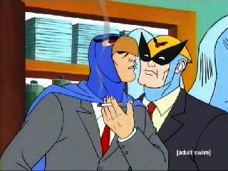
（ -Д-）y━~~＜よう、来年は俺たちの年だよなあ、出番あるかな
・・・・・・・・・・・・・・・・・・・・・・・・＞（゜д゜;）
で、寝ようかと思ったら「ジェニーの新作ゲームが！」なんてのを読んで、寝られなくなってしましましたとさ。
タイトル絵からしてかわいすぎ。ゲーム自体はよくありそうなテニスものなんだけど、動き一つ一つにドキドキ。これがキャラゲーの魔力というものか・・・・
点をとったときのこのよろこびジャンプが好きです。
2004年1月10日（土)サーバに普通にアップできるんだけど、なぜか0kbのファイルになってしまうという不思議な現象がおきてたんですが、直ったかな？どうしてこういう現象がおこるのか詳しい人に聞いてみたいです。
レンタルしてるとこに問い合わせりゃ早いのかもしんないけど、ここのってレスポンスが悪いから、ついついその気がなくなります。放置や無視はあたりまえ。ていうかメンテの人少ないんじゃないか、もしかして。
もしかして、ここが提供しているアクセス解析を使わなかった嫌がらせですか、なんて思ったりもしたんですが、直ったみたいだからいいや。
アクセス解析といえば、今回のは前のよか高機能のような気がしないでもない。
しかし、中国、エストニア、スペイン、韓国からもアクセスがあったのが気になる。英語ページもないうえに、文章率が高いうちのサイト、わかるんでしょうか？
まあそれはともかく。
今日の異議あり。
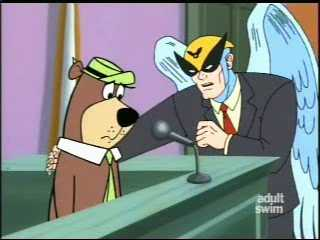( ;´д｀)ノ＜オレを信じろクマゴロー！
えーっと、なんか知らんが新年からカウンターとセットになっていたアクセス解析がなくなってました。
サーバーレンタルのおまけでついていたのでこっちはなんにもしなくていいから楽だったのになあ。で、まあどうせそんなに見ないからいいや。って思って放置してたんですが、今日（ローカルな知人では珍しく）パソコンに詳しい人とお話ししたときに、
「タダでつけられるならつけといた方がいいんじゃない？なんかあったときの保険としてさ。IPとれるし」
とかぬかしやがったので、まあそんあものかなーと微妙に洗脳されてしまいました。
サーバー借りてるとこに代わりのアクセス解析もあったんですが、どーせやるならちょっと色々調べてみてからのほうが面白いよなあ、なんて思ってあちこち探してみましたとさ。
結局機能うんぬんとかよくわからなかったので、気分で選ぶことに。
いやね、前からあちこちのサイトで回ってる手裏剣のやつがなんとなく気になってたんですよ。で、それにしてみました。TOPだけじゃなくて、それぞれのページにもいっぱいつけれるみたいなんで、ウホッと思って「よーし全ページにつけて分析野郎にナルゾー！」ってはりきりました。
3つ目であきた。
ていうか、このサービスにあきたときに取り外すことを考えたらめんどうくさくなって。
（後から考えたら正規表現で置換すれば一発だったのかな？とか思ったけどもういいや）
最初は手裏剣ぶんぶん回して喜んでいたんだけども、それも飽きてバナー版にしてみた。むう、手裏剣やらのアイコンをこっちでもっと選べたら面白いんだけどなあ。しかも、表示方式は一つ変えると全部同じになっちゃうし。
で、早速解析を覗いてみたら、いきなりアメリカからのアクセスが！
って、言語設定を英語にしているだけかもとか思ったんですが、調べてみるとやっぱりアメリカのアトランタから。まあこの解析の信憑性がどのくらいあるんだかわからないけど、ちょっとネットの裏側を覗いたような気分に。
こういうのは知らないよか知っとくほうが面白いかも。もしかして、ネットって見えないだけでけっこうな情報が流れてるんではないですかね。
今日の異議あり。
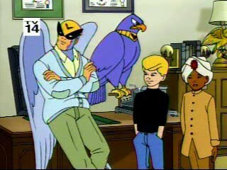( ;´д｀)ノ＜ガキの依頼はうけられねえ！
早いものですね。もう正月から一週間がたちましたか。
なにげに更新が遅れてるんですが、まあ、ちまちまいきましょうか。
用語集のほうは前からちまちまと書いていたものです。一応人に説明しなきゃいけないときにちゃちゃーっと言えるようにと始めたんですが、よく見りゃ説明になってないのもあるなあ。
まあ、これで安心して好き勝手に賭けるというもの。でも、今時ネットとかやってるんだから、分からない言葉くらい自分で検索して調べるよな。まあいいか。またちまちまメモって気が向いたら付け足しておこう。人に見せるというより自分をみつめかえすようで面白いし。
スターウォーズ・クローン大戦はもともとセリフが少なかったせいもあってか、あんまし吹き替えになっても印象変わらないね。
JLもよく調べてみればけっこう古い。なにしろ本来その後にビヨンドが始まるわけだからねえ。
ところで、時間があったらサイトのメンテをしたい。リンクのメンテとかも。いろいろリンクしたいとことかもあるんだけど、なんかあんまり増やすのもどうかなあってことで迷ってます。
それにしてもパワパフサイトというのはしぶといね。なんだか減ったかな〜っと思ってると、いつのまにやら別のところで新サイトが立ち上がってたりするんですよ。しかも新作もまだ来てないこの時期に。不思議なものです。
今日の異議あり。
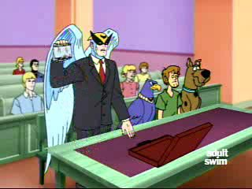( ;´д｀)ノ＜スクービーは無実でしゅ！
新年の仕事は「これからの打ち合わせ」な感じで、少しは早く帰れるのですが、やっとかなきゃいけない仕事ってのはたっぷりあって、持ち帰り仕事でヒーヒー。去年のペースでドガーっとやっちゃえばいいんですが、正月ボケが続いているのか集中力が続きません。
すぐに逃避に走るんですが、正月にためていたJLが面白すぎてすばらしくヤバいことに。
スーパーマンのお葬式とかよかったなあ。ヒゲが伸びてもリーゼントのセットは崩れないのには笑い。クリプトンの人ってそういう体質なのかしらん。
ニューアドベンチャーにしても、JLにしても、スーパーマンの話の延長なんで、スーパマンを見てないとピンとこないことが多くて、最近スーパーマンも見始めるようになったんですが、おもしろいね。
バットマンスキーなヤツなもので、正直スーパーマン？ダセエ。とか思って、いつかは見ることもあるだろうと録画だけはしていたんですが、おおバカ野郎でした。面白いジャン、スーパーマン。特に、映画とか実写のスーパーマンのロイスよか、アニメイテッドのロイスのほうが断然イイですね。いやーロイスってあんま好きじゃなかったんですが、このロイスはいいです。
バットマンのころからブルース・ティムとコンビを組んでいるポール・ディニですが、この人タイニーのころからそうだったけど、基本的にドタバタコメディが大好きらしく、この人の脚本の時はぶっとんでいていいですなあ。ミックスの回なんてスーパーマンというよりタイニートゥーン。
ポール・ディニといえば、アマゾンで頼んでいた「Jingle Belle: Dash Away All!」がまだ届かない。アマゾンとはいえ、マイナーな出版社からだと入荷が不安定なんだよなあ。
それはともかく、JLではただの人間バットマンをいかに動かすかがライターの腕のふるいどころって気がします。しかし、アレですな。JLのメンバーで敵に回したくないといえば、スーパーマンよりバットマンですな。なんかそんな気がしませんかねえ。スーパーマンとかって自分の肉体の頑強さを過信してるのか、敵のビームやら弾やらよけないことが多いんですよね。それで罠にかかったりしてるんで、なんかつけこむスキがありそうなんだけど、バットマンは・・・ブルブル。執念深そうだし。
てなわけで、スーパーマンも面白いけど、やっぱりバットマンの未公開エピが見たい。
だってさあ、「消えたバットマン」のロキシーロケットにしても、JLに出たファイヤーフライにしても、バットマン未公開エピのキャラでっせ。どーすんのよ。
さて、いよいよ前年度の優れたアニメ作品におくられる賞、アニー賞の時期がやってましりました。去年もPpGはキャラクターデザイン賞にノミネートされながらも、サムライジャックに賞を取られてしましましたが、今年はどうでしょうかね。
まあ、過去のノミネート作を見ればわかるんですが、だいたいノミネートは総入れ替えになっていて、何年もノミネートされるってのはめったにない。新鮮味ということでちょっと弱いかなって気もするんですが、今年もノミネートされたってことは喜んでいいことでしょうね。そういう意味じゃジャックはけっこう業界では評価が高いですね。
なにせ、TV部門：最優秀賞（Outstanding Achievement in an Animated Television Production）にノミネートされているくらいですから。意外なのは「Captain Sturdy」もノミネートされてるってこと。マジ？
TV部門：監督賞（Directing in an Animated Television Production）ではジミーニュートロン、シンプソンズ、ティーンエイジロボット、サムライジャック、キャプテンステューディ(笑)のぶつかり合い、気になるなあ。
ティーンエイジロボットがなんか賞をとってくれると、日本ニックの注目も高くなるような気がしないでもないので、なんかとって欲しい。
でまあ、話は変わるんだが、コチラのアダルトスイムのファインサイトで、アダルトスイムのイントロとかプロモとかが見れる。
アダルトスイムのアクションゾーンは見事に日本アニメばっかしですが、コメディゾーンは逆にアチラのものばかり。SGC2Cの実写(笑)のプロモもなかなかイケルんですが、ここはぜひバードマンのオープニングを見ていただきたい。かっこいいいいいいい。
( ;´д｀)ノ＜異議アリ！
仕事始めで、強制的に仕事モードになったわけなんですが、全然テンションがあがらす、今日はまったく仕事になりませんでした。にもかかわらず、仕事は早々山ずみ。その現実を直視して、ようやくマジでビビリはじめ、やっとこエンジンがかかったような状態。
去年はなにかとカートゥーン、アニメ関係も騒がしかったですが、今年はどうなんだろうねえ。
アメコミの実写映画化の勢いは今年も衰えてないようで、「スパイダーマン2」やら「ヘルボーイ」やら「エイリアンvs.プレデター」やら「パニッシャー」やら「スクービードゥ2」やら「ルーニートゥーン」やらが予定されてます。「ファンタスティックフォー」も順調にいけば出てくるかも。ん〜、ドラゴンボールの実写化はどーなったんだろう？あと、サムライジャックの映画化も。
とか言ってると、なんとガーフィールドが映画化ですか。
でも、これはちょっとどーかと。予告編を見ればわかるんですが・・・・
こんなのガーフィールドじゃないやい！！！
動きすぎです。違う猫かと思った。それに表情も豊かすぎ。全然原作のノリになってないよ。なんちゅうか、もっと無愛想でだらーっとしてて、動かないでボソボソと皮肉混じりに喋るのがガーフィールドでしょうが。スクービーじゃないんだからさ。てなわけで、公開前から、この映画はダメの烙印を押すことに。
カートゥーンを実写化するなら、ピンキー＆ブレインなんかよさそうな気がするんだけどなあ。
「お前も同じ考えか？」「そうだと思うよ」
正月ボケっていうのかなんだかしりませんが、なんかいろんなことにやる気がおきません。
寝て喰ってTV見て寝て喰って・・・
明日から仕事で、「休み明けには」なんていう仕事の宿題もまったくやってません。今からやってないことへのいいわけを考え中ですが、それを考えることすら面倒くさいです。ていうか、それじゃマズイよなあと思いつつも、「さあ！」と机に向かってもそこでフリーズ。眠くなってきます。＞で、本当に寝ちゃいます。
気分転換にと、so-netチャンネルで「シベリア超特急3」を見る。
さらになーんにもやる気がなくなってしましました。
もう、どーでもいいや。よくないんだけど、どーでもいいや。正月休みは普通の連休よりも人間をダメにします。
こんなんじゃダメだろ！まずは、ちゃんとなにから始めて、なにをどうするのかよく計画を練ろう。布団の中で。ぐー。
古畑任三郎を見て、そのまんまの流れでだら〜っとTVつけてたら「お台場ソンポ」つう番組が始まったんですが、そこで！
でーでーでー、でーでーででー。ちゃっちゃちゃららら。じゃーん。
パワパフの曲だよ！！！
なんか、芸能人紹介の時に流れる曲がパワパフのオープニングのアレだったんですよ。ああ、びっくりした。
来週もやるのかな？チェックしておこう。（番組自体おもしろかったので、どのみちまた見ようかと思う）
今日は本当にダラーっとしてました。
休みに入ったらやろうとか思ってたことなんて、まったく出来てません。せめて１ヵ月ないとなあ。あってもダメなのかも。
一歩も外に出ないでTVばっかり。えーやん！こんなのめったにできないんだからさ。（ダレに言い訳してるんだろう）
ロッコーのモダンライフでは「朝起きて、仕事いって、帰ってTV見て、寝るだけなんてもういやだー」とかいう話があって面白かった。最後には「朝起きて、仕事いって、帰ってTV見て、寝るだけの生活最高！」になってたのがまたよし。
スーパーマンではロイスのスカートがめくれて、恥ずかしがるシーンが良かったです。いい・・・
あのロイスが、たまにああいう表情を見せるから凄くいいんですよ。
うーむ、もしかして、けっこうキツめの女性が好みなのかも＜ワタシ
ロイス、マンディ、シーゴー・・・ 叱られたいってことでブロッサムもいれとこう。
ブロッサムといえば、親戚の家に行ったときの続き。
いとこ（女性）のTVの趣味が実は「りぼん」系だと判明。ていうか少女系っていうのかな。子供に見せてるっていって、とりためてたというビデオがあるんですが、「赤ずきんちゃちゃ」とか「神風怪盗ジャンヌ」とか「ナースエンジェルりりか」とか、最近だと「明日のナージャ」とかそんなんがいっぱい。
魔法少女系とはちょっと違って、自分の中では「りぼん」なイメージ。
まあ、他にもいろいろあったんですが、このへん自分みたことないし、まったくもってよく知らないもんで。
でも、確か「ナースエンジェルりりか」のりりかの声ってブロッサムだったよなあ・・・ってことを思い出して、それとなーく遠回りないいわけで、ちょこっと見せてもらった。
まあ、りりかはりりか。ブロッサムはブロッサム。という感じにちゃんと使い分けられていて、なるほど〜って感じだったんですが、そこで悪役登場。ヤザーだかゲズーだか忘れましたがなんかそんな名の美形の悪役。
モジョだーーーーーーーーーーー！
うわああ、モジョのイメージがかぶってすっげえ違和感。いつ高笑いしてくれるのかとドキドキしてました。（しなかったけど）
この時から敵対関係だったのね(笑)
さっきGIRLS LABOの日記を覗いたらビックリすることが。で、調べてみました。
はい、みんな注目。試験に出るよ。
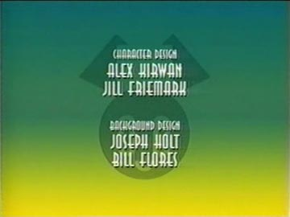
これはティーンエイジロボットのスタッフロール画面。
ここの上の段の名前に注目。
キャラクターデザイン
Alex Kirwan
Jill Friemark
はいそこ、Jill Friemarkで「えーーー」とか言ったあなた！友達になりましょう。
Scary Miss Maryの作者Jill
Friemarkさんですよ！！！！！
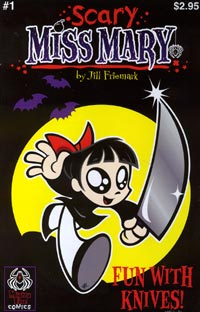
マリーちゃーん。
ジェニーかわいいわけだ。まあ、キャラデザにはAlex Kirwanも参加してるから、どっちが・・・ってのはわからないんだけどな。でも、ミスマリーも好きで、ジェニーに惹かれたアナタ！その魂の導きは正しかったのです！！
ちなみにクリエイターはRob Renzettiです。わすれんようにな。
うーん、invader ZIMのJhonen Vasquezといい、好きな作家が好きなアニメに参加してることが続いて喜びを通り越してビックリですよ。ていうか、最近アンダーグラウンドからの底上げがすごいな。あとは・・・Roman Dirgeもなんかアニメつくらないかなあ。（一応、ZIMのスタッフに参加してるけど）いや、ほんと。LENOREはアニメ化の企画あったんだよ！sonyのバカがさあ・・・まあ、契約は切れて権利は戻ったようだけど。
年末以来マンガついてるのか、また描いてみました。
正月マンガ＞■
余談として、「ひまじん」を見せてたときに・・・
「キンタマ〜！キンタマ〜！」と大声で歌い始めたときはビビリました。こ、こらっ！ワシが出入り禁止になったらどーする！
あと、クラブ・モジョジョジョの時は、「なんでここはオサルさんばっかりなのー？ヘンなのー」とか言ってたことは内緒だ。
まあ、なんですか。アニメは見たことなくてグッズだけで知ってるようだったんですな。だから、カレとかもよく知らないらしい。もちろんメイジャーマンとかビーボとかはまったく。
やっぱりバブルスが大好きで、次はブロッサムがリボンでキレイでかわいい。とか言ってました。バターカップはあんまりスキじゃないんだと。ふっ、バターカップの魅力がわかるには幼すぎたな。まあ、これはアニメを見なきゃわからんよなあ。
だから、これアニメもあるよって教えたらすごい見たがってたけど、近くのレンタルビデオ屋においてるか心配だなあ。CSやケーブルに入る予定はないとか言ってたし。
でもディズニーもあるよって言ったら、ちょっと興味深げだった。
このバカチンが！！！
ちっ。どいつもこいつも意味なくディズニーかよ。まあ、ついでに見てくれたらそれはそれでラッキーだけどさ。一応メイシーちゃんやもぐらくんもあるよとは言っておいたけど。
初詣から帰ってまいりました。
そんなわけで、あけましておめでとうございます。
あちこち覗くと、次々と新年トップページに！百花繚乱とはこのこと。なんかクリスマスの時より楽しいのは日本人だからでしょうか？
ああ、あわてて５分で描いたうちのトップが激しくショボイ。気分的に日付が変わった瞬間に更新したかったもので・・・まあよし。立ち直り早っ。
とりあえず、これから寝ます。いい夢が見られますように。
{kind=link}
{kind=link}